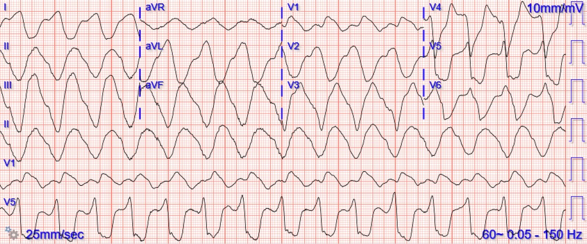
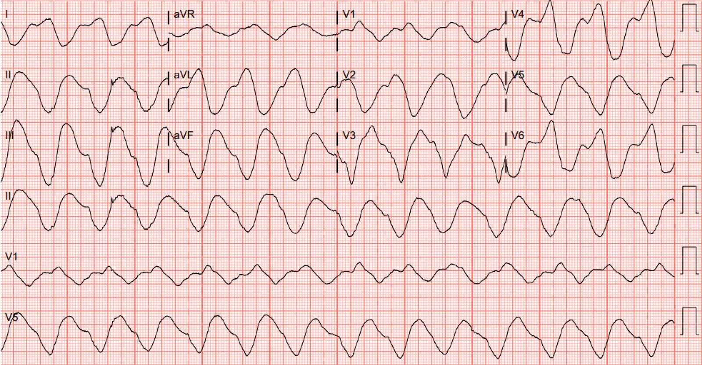
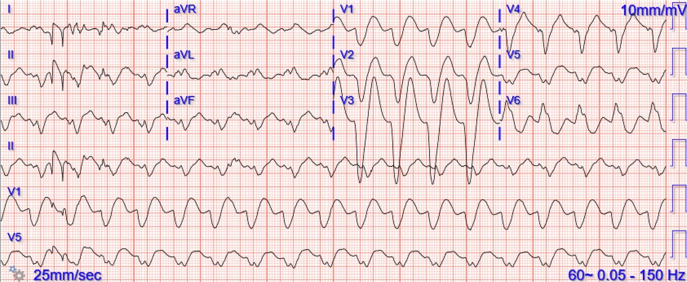
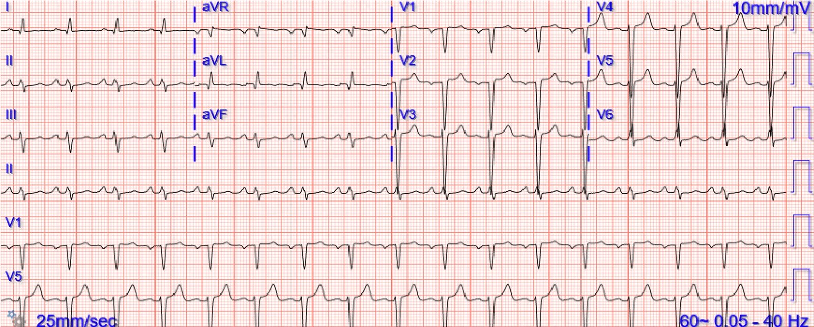
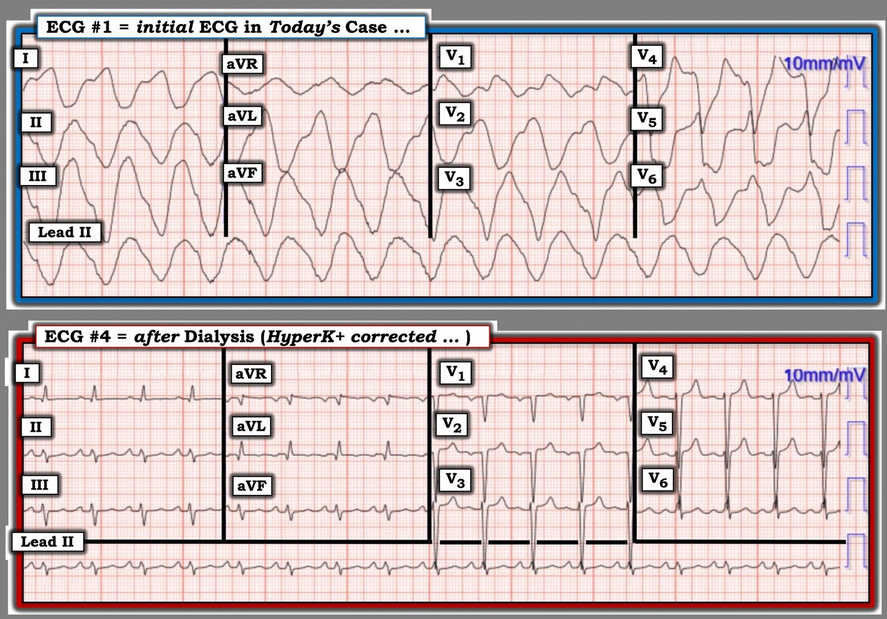

23/12/2025 — Nam giới ngoài 50 tuổi thay đổi ý thức và đau bụng. Điều trị nào phải được thực hiện ngay lập tức, và với liều bao nhiêu?
Bản dịch tiếng Việt của bài "A man in his 50s with altered mental status and abdominal pain. What treatment must be given immediately, and how much?" – Dr. Smith’s ECG Blog. Giữ nguyên toàn bộ 5 hình ảnh của bản gốc.
Nam 50 tuổi, tiền sử bệnh thận giai đoạn cuối (ESRD), suy tim, viêm tụy và nhồi máu cơ tim cũ, đến khoa cấp cứu (ED) với lý do chính là đau thượng vị. Bệnh nhân được mô tả là “lơ mơ, thay đổi ý thức”, chỉ khai thác được ít bệnh sử do tình trạng tri giác lúc nhập viện. Đây là điện tâm đồ lúc phân loại (triage) của bệnh nhân:


Suy nghĩ ban đầu của bạn là gì? – Điện tâm đồ này trông có dạng hình sin (sinusoidal) và rất đáng lo ngại tăng kali máu – QRS rộng – Tần số quá chậm để là nhịp nhanh thất (VT)
Sau đó bệnh nhân khai rằng đã 5 ngày không được lọc máu; điều trị tăng kali máu được bắt đầu với albuterol, insulin, dextrose, loklema và chỉ 2g calci gluconat.
(Ghi chú của Meyers: đây là một sai lầm ban đầu thường gặp và quan trọng, 2g calci gluconat hoàn toàn không đủ cho tình trạng tăng kali máu dọa ngừng tim (peri-arrest) này).
Smith: hãy nhớ rằng để tương đương 1 “ống” calci clorid, bạn phải cho 3 ống calci gluconat. Đó là tương đương về số mol, vì khối lượng phân tử của gluconat lớn hơn nhiều so với của clorid.
Kali ban đầu trả về là 8,4 mEq/L
Điện tâm đồ ghi lại ngay sau điều trị ban đầu:


Điện tâm đồ này trông còn tệ hơn điện tâm đồ đầu tiên! 2gm calci gluconat là không đủ. Điều này đã được nhận ra, và sau đó cho thêm 6 gm calci gluconat nữa.
Đây là điện tâm đồ ngay sau đó:


Như mong đợi, QRS đã cải thiện phần nào, tần số đã tăng lên, và sóng P đã trở nên rõ hơn.
Bệnh nhân được lọc máu và ghi lại điện tâm đồ:


QRS đã hẹp lại. Nhiều khả năng có phì đại thất trái (LVH) nền, có thể kèm cả LAFB. Các dấu hiệu tăng kali máu đáng lo ngại nhất đã hết.
Bệnh nhân hồi phục tốt.
Xem ca nhịp nhanh thất do tăng kali máu này, cần tới 15 gam calci gluconat để ổn định.
Trong ca này, các bác sĩ điều trị nghĩ rằng 1 g calci gluconat đã xử lý xong tình trạng tăng kali máu. Nhưng thực sự điều gì đã xảy ra? Tachycardia and hyperkalemia. What will happen after therapy with 1 gram of Ca gluconate and some bicarbonate?
Các ca tăng kali máu nói chung:
A 50s year old man with lightheadedness and bradycardia (Nam giới ngoài 50 tuổi choáng váng và nhịp chậm)
Patient with Dyspnea. You are handed a triage ECG interpreted as “normal” by the computer. (Physician also reads it as normal) (Bệnh nhân khó thở. Bạn được đưa một điện tâm đồ phân loại được máy tính đọc là “bình thường”. (Bác sĩ cũng đọc là bình thường))
Severe shock, obtunded, and a diagnostic prehospital ECG. Also: How did this happen? (Sốc nặng, lơ mơ, và một điện tâm đồ trước viện có giá trị chẩn đoán. Thêm nữa: Chuyện này xảy ra như thế nào?)
A woman with near-syncope, bradycardia, and hypotension (Một phụ nữ tiền ngất, nhịp chậm và tụt huyết áp)
What happens if you do not recognize this ECG instantly? (Điều gì xảy ra nếu bạn không nhận ra ngay điện tâm đồ này?)
A woman in her 50s with dyspnea and bradycardia (Một phụ nữ ngoài 50 tuổi khó thở và nhịp chậm)
A patient with cardiac arrest, ROSC, and right bundle branch block (RBBB). (Một bệnh nhân ngừng tim, tái lập tuần hoàn tự nhiên (ROSC) và blốc nhánh phải (RBBB).)
Is this just right bundle branch block? (Đây có phải chỉ là blốc nhánh phải?)
Is This a Simple Right Bundle Branch Block? (Đây có phải là một blốc nhánh phải đơn thuần?)
A 60-something who has non-specific generalized malaise and is ill appearing. (Một người ngoài 60 tuổi mệt mỏi toàn thân không đặc hiệu và trông có vẻ bệnh nặng.)
HyperKalemia with Cardiac Arrest. (Tăng kali máu gây ngừng tim.)
Peaked T waves: Hyperacute (STEMI) vs. Early Repolarizaton vs. Hyperkalemia (Sóng T nhọn: tối cấp (STEMI) so với tái cực sớm so với tăng kali máu)
What will you do for this altered and bradycardic patient? (Bạn sẽ làm gì cho bệnh nhân thay đổi ý thức và nhịp chậm này?)
I saw this computer “normal” ECG in a stack of ECGs I was reading (Tôi thấy điện tâm đồ máy tính đọc “bình thường” này trong một xấp điện tâm đồ tôi đang đọc)
What is the diagnosis? (Chẩn đoán là gì?)
Found comatose with prehospital ECG showing “bigeminal PVCs” and “Tachycardia at a rate of 156” (Được phát hiện hôn mê, điện tâm đồ trước viện cho thấy “PVC nhịp đôi” và “nhịp nhanh tần số 156”)
An elderly woman found down with bradycardia and hypotension (Một phụ nữ lớn tuổi được phát hiện nằm gục, nhịp chậm và tụt huyết áp)
A middle aged man with unwitnessed cardiac arrest (Một người đàn ông trung niên ngừng tim không có người chứng kiến)
Test almost all of your most important ECG rhythm interpretation skills with this case. (Kiểm tra gần như tất cả các kỹ năng đọc nhịp trên điện tâm đồ quan trọng nhất của bạn với ca này.)
Sinus rhythm with a new wide complex QRS (Nhịp xoang với QRS rộng mới xuất hiện)
This ECG is pathognomonic and you must recognize it. (Điện tâm đồ này mang tính đặc trưng bệnh và bạn phải nhận ra nó.)
A Very Wide Complex Tachycardia. What is the Rhythm? Use Lewis Leads!! (Một nhịp nhanh QRS rất rộng. Nhịp là gì? Hãy dùng chuyển đạo Lewis!!)
A Very Wide Complex (Một QRS rất rộng)
Are these peaked T-waves the patient’s baseline T-waves? (Những sóng T nhọn này có phải là sóng T nền của bệnh nhân?)
Bradycardia, SOB, in a Dialysis Patient (Nhịp chậm, khó thở, ở một bệnh nhân lọc máu)
Các ca tăng kali máu giả OMI:
Acute respiratory distress: Correct interpretation of the initial and serial ECG findings, with aggressive management, might have saved his life. (Suy hô hấp cấp: Đọc đúng các dấu hiệu trên điện tâm đồ ban đầu và các điện tâm đồ liên tiếp, kèm xử trí tích cực, có thể đã cứu được anh ấy.)
“Steve, what do you think of this ECG in this Cardiac Arrest Patient?” (“Steve, anh nghĩ gì về điện tâm đồ này ở bệnh nhân ngừng tim?”)
Hyperkalemia and ST Segment Elevation, Post 1 (Tăng kali máu và ST chênh lên, Bài 1)
A Tragic Case, related to the last post (Một ca bi thảm, liên quan đến bài trước)
A patient with chest pain and ST Elevation in V1 and V2 (Một bệnh nhân đau ngực và ST chênh lên ở V1 và V2)
You MUST recognize this pattern, even if it is not common (Bạn PHẢI nhận ra hình ảnh này, dù nó không thường gặp)
ST Elevation. What is it? (ST chênh lên. Đó là gì?)
This ECG Pattern Told the Story When the Patient Could Not (Hình ảnh điện tâm đồ này đã kể lại câu chuyện khi bệnh nhân không thể)
What are these ST elevations, ST depressions, and tall T waves diagnostic of? (Những ST chênh lên, ST chênh xuống và sóng T cao này là chẩn đoán của bệnh gì?)
Another Shark Fin. With a twist. (Lại một ST “vây cá mập”. Có biến tấu.)
Do you recognize this ECG yet? (Bạn đã nhận ra điện tâm đồ này chưa?)
Right Bundle Branch Block with ST Elevation in V1? (Blốc nhánh phải kèm ST chênh lên ở V1?)
ST elevation in aVL with reciprocal ST depression in the inferior leads (ST chênh lên ở aVL kèm ST chênh xuống soi gương ở các chuyển đạo dưới)
Shock, bradycardia, ST Elevation in V1 and V2. Activate the Cath Lab? (Sốc, nhịp chậm, ST chênh lên ở V1 và V2. Kích hoạt phòng thông tim?)
Another deadly and confusing ECG. Are you still one of the many people who will be fooled by this ECG, or do you recognize it instantly? (Lại một điện tâm đồ chết người và gây bối rối. Bạn có còn là một trong nhiều người sẽ bị điện tâm đồ này đánh lừa, hay bạn nhận ra nó ngay lập tức?)
= = =
======================================
BÌNH LUẬN CỦA TÔI, bởi KEN GRAUER, MD (23/12/2025):
Ca hôm nay của bác sĩ Meyers làm nổi bật một loạt điểm quan trọng về hình ảnh điện tâm đồ và xử trí tăng kali máu.
- Để rõ ràng, trong Hình 1 — tôi đã đặt lại điện tâm đồ thứ 1 và điện tâm đồ cuối cùng được ghi trong phần bàn luận của bác sĩ Meyers.
= = =
Hình 1: Điện tâm đồ thứ 1 và điện tâm đồ cuối cùng được ghi trong ca hôm nay:


= = =
Sự cần thiết phải nhận ra ngay lập tức và điều trị:
“Bức tranh điện tâm đồ” ở Hình 1 — phải ngay lập tức cho bạn biết rằng có một tình trạng nhiễm độc nào đó đang tác động. Khi bạn đã xác nhận tốc độ ghi là 25 mm/giây (chứ không phải 50 mm/giây) — bạn sẽ biết rằng hình ảnh điện tâm đồ này là hậu quả của một tình trạng nhiễm độc nào đó (thường gặp nhất là tăng K+ máu) cho đến khi chứng minh được điều ngược lại, vì:
- i) QRS rộng đến mức tôi thậm chí không biết phải đo nó thế nào.
- ii) QRS có hình thái vô định hình (hoàn toàn không có hình dạng).
Như bác sĩ Meyers đã nêu — tầm quan trọng của việc nhận ra ngay lập tức “bức tranh điện tâm đồ” này — là để không trì hoãn điều trị vì chờ xét nghiệm xác nhận nồng độ K+ huyết thanh. Thay vào đó — hãy điều trị ngay lập tức bằng calci gluconat tĩnh mạch (cần nhận thức rằng 2 gm Ca++ gluconat tĩnh mạch có thể không đủ để ổn định bệnh nhân trong tình huống đe dọa tính mạng này).
- Điều “tuyệt vời” trong xử trí lâm sàng mức K+ huyết thanh sắp gây tử vong này (như bác sĩ Meyers đã cho thấy ở trên bằng các điện tâm đồ liên tiếp) — là bạn sẽ biết trong vòng vài phút liệu mình có đang cho đủ Ca++ tĩnh mạch hay không, dựa vào sự cải thiện dần của các thông số trên điện tâm đồ.
- iii) PHẦN THƯỞNG: Khi biết bệnh nhân hôm nay có ESRD (bệnh thận giai đoạn cuối), và đã 5 ngày không được lọc máu — mọi nghi ngờ về tăng kali máu đều bị loại bỏ. Nhưng điểm cần nhấn mạnh là ngay cả khi không có bệnh sử mang tính “buộc tội” này — điều trị theo kinh nghiệm khi gặp điện tâm đồ #1, với lượng Ca++ tĩnh mạch nhiều đến mức cần thiết để làm hẹp QRS và đưa bản ghi ban đầu này về một hình thái điện tâm đồ nhận diện được — là có chỉ định (và thiết yếu để đạt kết cục tối ưu).
= = =
Bản ghi sau lọc máu:
Tôi nghĩ việc so sánh song song 2 điện tâm đồ ở Hình 1 sẽ đem lại nhiều hiểu biết:
- Điện tâm đồ #4 (ghi sau điều trị nội khoa tăng kali máu — và sau lọc máu) — giờ cho thấy sóng P của nhịp xoang, với QRS hẹp, và thực sự không còn dấu hiệu nào của tăng kali máu. Sóng T ở các chuyển đạo trước tim dương, và dù hơi nhọn — các sóng T này không có đỉnh nhọn hoắt — và sườn lên và sườn xuống của các sóng T này không đối xứng (như thường thấy trong tăng kali máu). Nhìn điện tâm đồ #4 này, tôi sẽ không thể biết rằng vài giờ trước bệnh nhân có mức K+ huyết thanh tăng đe dọa tính mạng.
- Như thường gặp (và được dự đoán) ở bệnh nhân ESRD — bệnh nhân này rõ ràng có LVH (theo tiêu chuẩn Peguero, tổng của sóng S sâu nhất ở bất kỳ chuyển đạo trước tim nào + sóng S ở V4 vượt xa ngưỡng 28mm cần có để chẩn đoán LVH).
- LƯU Ý: Có thể truy cập thuận tiện các tiêu chuẩn chẩn đoán LVH từ Menu ở đầu mọi trang của Dr. Smith’s ECG Blog ==> BẤM VÀO ĐÂY để xem cách tìm thông tin này.
= = =
Điểm cần học bổ sung:
- Khi có tăng kali máu đáng kể — bạn thường sẽ không biết điện tâm đồ sẽ trông như thế nào cho đến khi tăng kali máu được điều chỉnh. Điều này không chỉ áp dụng với tình trạng LVH rõ rệt mà bệnh nhân hôm nay mắc — mà quan trọng hơn, các OMI cấp có thể bị tăng kali máu che lấp — đó là lý do tại sao luôn luôn thiết yếu phải ghi lại điện tâm đồ sau khi điều chỉnh tăng kali máu.
= = =
= = =